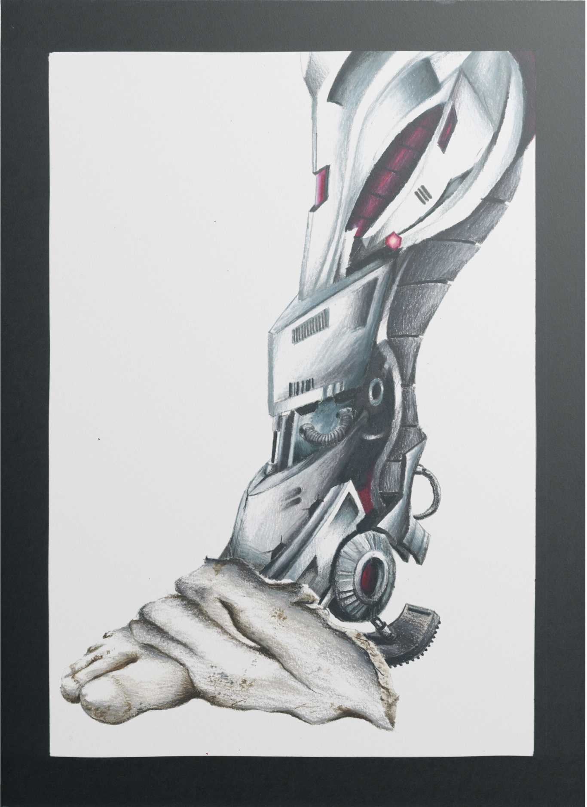
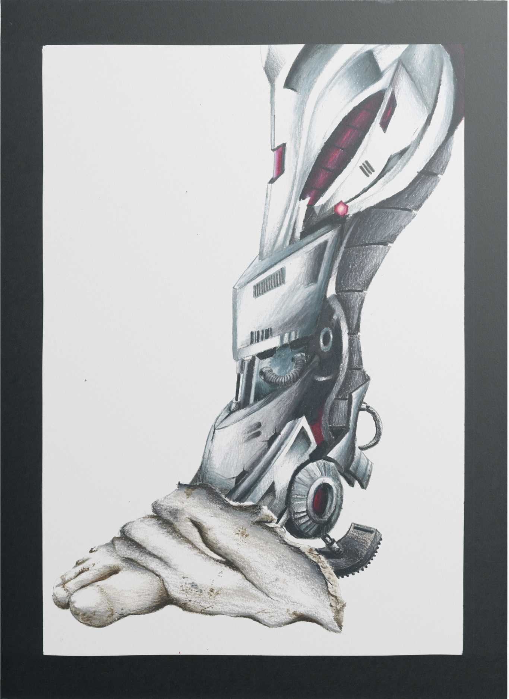

Specimen Typographique
Specimen typographique pour la font Vollkorn de Friedrich Althausen
Cette typographie allemande évoque par ses formes et ses ligatures aux allures ornementales la période médiévale. Ce specimen typographique reprend les codes des affiches telles que stylisées pour les 95 thèses de Luther.


 
